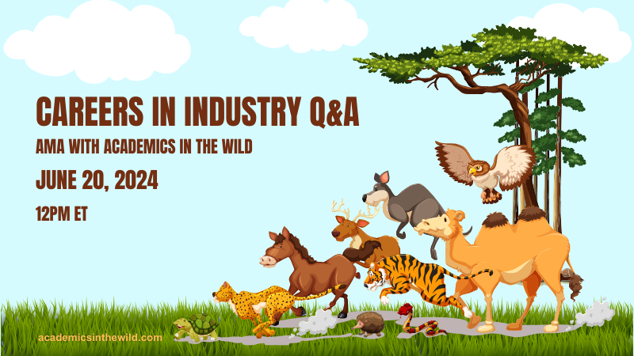

Date and Time: 20th June, 2024, 12pm ET
Are you a physics or math PhD candidate/graduate considering a career outside academia? Join us for this AMA (Ask Me Anything) hosted by Academics in the Wild. Our special guests, including Juan Ignacio Cayuso and Gwyneth Allwright, made the jump from academia to industry, and are now eager to share their experiences, insights, and advice with you. Hosted by Aggie Branczyk.
How It Works:
- The AMA will be a text-based, Reddit-style event hosted on our Discord server.
- The channel will open 24 hours before the scheduled event, allowing you to post your questions in advance.
- During the event, our guests will be online to answer your questions and provide guidance on navigating the transition from academia to industry.
Why Attend?
- Gain firsthand knowledge from professionals who have made the leap from academia to industry.
- Learn about the various career paths in industry and beyond.
- Get practical advice on job searching, networking, and skill development tailored for physicists and mathematicians.
How to Participate:
- Join our Discord server: https://discord.gg/UF5ENzvYEq
- Post your questions in the #ama-event channel starting 24 hours before the event.
- Tune in on 20th June at 12pm ET to see the answers and participate in the live discussion.
We look forward to seeing you there!
About our guests:
- Juan Ignacio Cayuso did his PhD in cosmology and is now a Manager in Strategic Data and Analytics. He has been in industry for two years.
- Gwyneth Allwright did her Masters in strong gravity and is now a Senior Software Engineer. She has been in industry for four years.
- Plus more to be announced
Ps. Word-of-mouth is our favourite way to grow this community, so if you have any friends that you think might be interested in this event, please send them the link to this page.
Pps. If you would like to put up a poster on a notice board at your university/workplace, you can download a pdf version here.